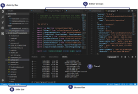

Visual Studio Code


Sublime text


Web Development merupakan divisi yang mempelajari tentang web yang mana akan dipisah menjadi duatim defoliping yaitu:
Front End Developer berperan mengembangkan tampilan situs dengan menggunakan bahasa pemrograman seperti CSS (Cascading Style Sheets), HTML (Hypertext Markup Language), dan Javascript.
Back End Developer bertugas menangani server, aplikasi , dan database serta memastikan bahwa sebuah situs dapat berfungsi dan diakses melalui monitoring "di balik layar”.